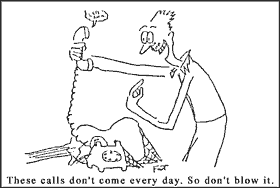

|
Lunch With The Fat Man | 1, 2, 3
"Yo, Jimbo! (The Hired Hand)"
The Fat Man would love to hear from you, whether you agree with everything you've ever read here or you think he's full of dogma doo. If you've got an opinion or question, email it to The Fat Man. Remember, only you can take the "undisputed" out of his byline.
Hi. Sit down. What are you having? Welcome to Lunch With the Fat Man.
"Yo! Jimbo! Come on down to the studio on Saturday - I want you to play on a tape I'm making."
So, somebody finally called you up and asked you to play on their record. Not bad. It’s a big step when someone puts enough faith in you to invite you to be part of their personal artistic endeavor. Or even their jingle session. Perhaps there is a career in studio musicianship for you. Take a minute or two to be real pleased with yourself. No, don't take three. Put one of those back. There.
Now, putting our feet back to earth, there are some Weird Facts you need to know about working on someone else’s project. As if recording your own music weren't strange enough. With a shudder, let's get on with it.
Your showing up on time, being inexpensive, and playing the part are the only things that really matter to the person who's hiring you.
A radical thought, no? You really want to argue it, don't you? And you will never believe me, no matter how many sessions you do, no matter how long your new career as a session cat lasts. No, you'll never believe it... until the very nanosecond that you hire someone to play on your recording,
That's how it is, and that's how it always shall be, until a billion recordings from now when someone hires you just for "your sound," at which time you will still be able to damage your reputation by charging too much and showing up late. Speaking of "your sound",
You're not in the studio to express yourself. You're there to express somebody else.
Even if you were hired because the artist (Note: you're not the artist) likes the way you play, he is hoping against hope for one thing - that the way you play will fit with the track he's cutting, and help him to express the music he has within him. Or her. "Playing the part," mentioned above as one of the three things your employer cares about, means fulfilling or exceeding his expectations for the part. If you don't tune in to his questions and suggestions, you won't be able to do that, no matter how well you play.
 You can't expect much money.
As I'm fond of saying, music doesn't sell. Drugs sell. There's always someone better than you, and always someone cheaper, so don't price yourself out of work. Work cheap and work lots, and you've got a chance.
The only thing more boring than making your record is helping someone else make their record.
Be prepared for minutes that seem like hours as other people play their parts, engineers set up mics and effects, and producers expound the virtues of a tight groove and a live feel, whatever that means. Then, when you're finally given the cue to play, be prepared for hours that seem like minutes.
You're only as together as your equipment.
Your artistic sensibilities don't count if your guitar won't stay in tune. In the studio, no amount of sunglasses, cigarettes, and leather pants will help. Consult past issues of Glitch News for Fat tips on preparing your instruments for recording.
The harder you worked on your part before you came in, the more likely it is to change in the studio.
Well, the more you'll notice the change anyway. It's great to have a part prepared, but it's probable that it will have to change a little. Be mentally prepared for that. You also need to be prepared to make changes to your part that you don’t necessarily like, because...
Of all the opinions in the room, yours is least important.
The artist and producer have the final decision about what you play, and between them and the engineer lies final choice about your sound. The only way that your opinion is the most important is if those people decide that your opinion is the most important.
Now, I'm not saying that you're in for years of blind servitude and misery as a studio cat. But if you can deal with the things I've mentioned above and still be happy, then you have what it takes to reap the obvious benefits of playing music in the studio for money. If you can't deal with these things, keep your own artistic projects going, keep reaching for the stars, but don't expect to be hired again as a studio cat, 'cause you ain't got it. Now, are you ready to write me a letter?
Say, this was great. Let's have lunch more often.
 Next page | "Lights... Camera... Rock!" Next page | "Lights... Camera... Rock!"
1, 2, 3
|